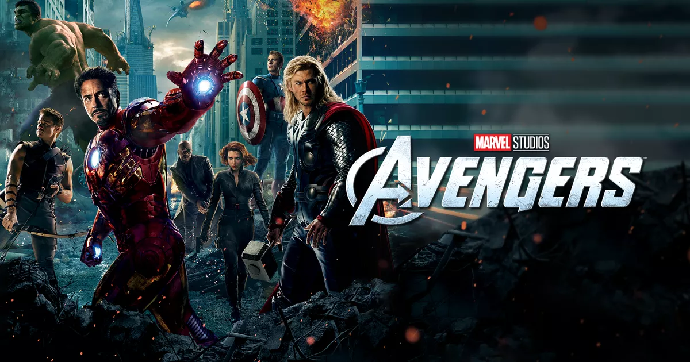
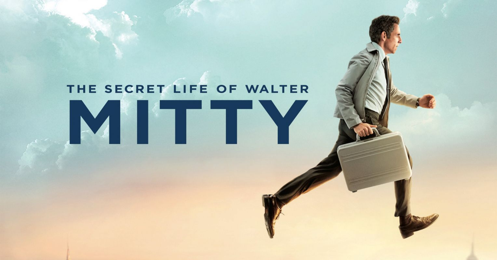

This is my all time favourite sci-fi movie because it makes me dream to be a superhero to save the world.
Another my legendary wizard world's movie. I like this episode the most because I feel so warm welcome every time I start watching them again and again.

The reason why this movie is my all time favorite movie is never give up in life and try dedicate your life to your job. The movie inspired me to start doing something now, no matter what how fear you have or how risk everything is. At least, you are brave enough to do it. I love the location that they filmed in Iceland too, it makes me feel fresh and alive, I want to go there one day.
